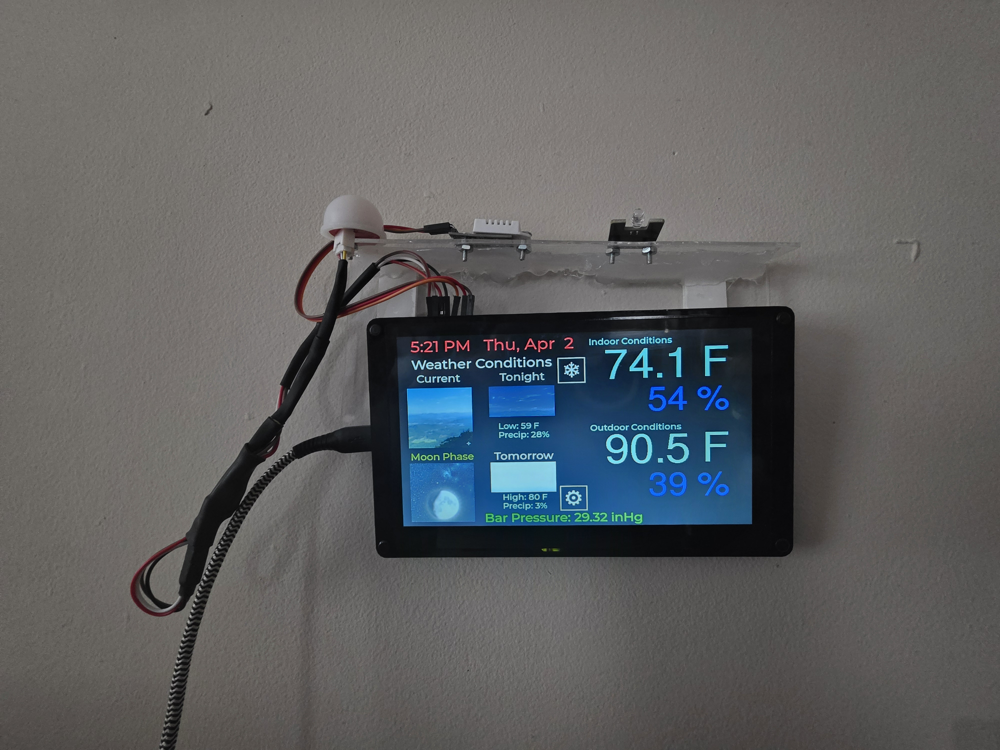
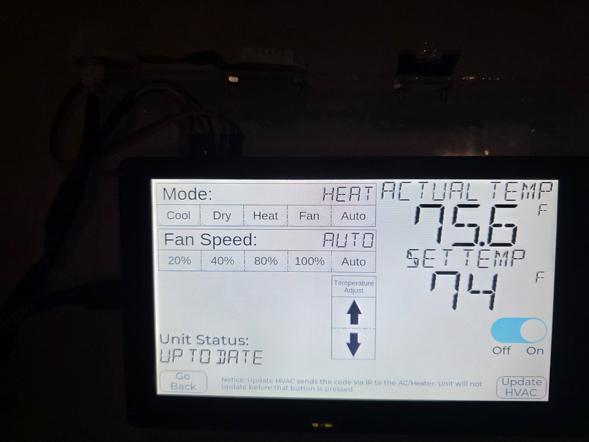

What it is
A wall-mounted weather and climate control station. The display unit reads indoor temperature, humidity, and ambient light locally; pulls outdoor temperature, humidity, and barometric pressure from an outdoor sensor node over MQTT; and serves a touch UI for two HVAC zones. Home Assistant sits in the middle as automation substrate and message bus. The whole thing is local — no cloud APIs except Open-Meteo and an NTP source for time.
Architecture
The display unit doesn't talk directly to the HVAC nodes or the outdoor sensor. It publishes commands and subscribes to state on MQTT topics that Home Assistant owns. Home Assistant translates between MQTT and the ESPHome API, where the actuator and sensor nodes live. Decoupling at the message-bus layer means any one of the nodes can drop and come back without the others noticing.
MQTT topics
| Topic | Direction | Purpose |
|---|---|---|
home/outdoor/temperature | HA → Panel | SHT31 outdoor temp |
home/outdoor/humidity | HA → Panel | SHT31 outdoor humidity |
home/outdoor/barometer | HA → Panel | BMP280 barometric pressure |
home/hvac/livingroom/state | HA → Panel | HVAC mode, set temp, fan speed |
home/hvac/livingroom/set | Panel → HA | Mode/temp/fan/power commands |
The decisions that mattered
Direct serial to the mini splits, not IR.
The Midea mini splits expose their control protocol over UART. IR works but is one-way — you can fire commands and hope, but you don't get state back. Direct serial gives bidirectional control: the panel knows what the unit is actually doing, not just what was last commanded at it. A voltage divider on the RX line (10K from GPIO 12 to signal, 22K to ground) drops the 5V UART output to the 3.3V the ESP32 can read.
Home Assistant as middleware, not just a logger.
Putting HA in the middle costs nothing at runtime and buys scheduling, automation, and multi-device coordination for free. The panel can be replaced or rewritten without touching the HVAC integration, because the contract is MQTT topics, not device APIs.
Dual I2C buses for the outdoor sensor station.
The outdoor SHT31 and the indoor-mounted BMP280 run on separate I2C buses (GPIO 6/7 and GPIO 8/9). Sharing a bus across a long cable run to the outdoor enclosure introduced crosstalk that showed up as occasional bad reads. Splitting the buses eliminated the failure mode.
The Stevenson screen, after a sensor died in a week.
The original outdoor sensor was a DHT22 in a basic enclosure. It failed from moisture exposure within one week. The replacement is an SHT31 housed in a 3D-printed PETG Stevenson screen — the louvered radiation shield design used in real meteorological stations, shrunk down to fit on the eave. The SHT31 has been running through summer humidity and winter condensation without drift.
MQTT with API fallback.
Outdoor data goes stale if the outdoor node drops or MQTT goes quiet. The panel tracks last-update timestamps with a one-hour threshold, and when MQTT data is stale, Open-Meteo API values substitute automatically. The display labels indicate which readings are live and which are substituted, so the user always knows what they're looking at.
Zip code as the single user input.
Config screen asks for one thing: a zip code. Geocoding through Zippopotam.us produces lat/lon, which drives weather location and timezone. One input, several downstream resolutions, no config drift across screens.

The UI layer
The interface is LVGL, generated in SquareLine Studio and driven through LovyanGFX on the CrowPanel's RGB parallel display. Five screens: Weather, Weather (Dark), Config, Climate Control, and an Asset preview screen used during development. The dark variant triggers from the BH1750 ambient light sensor and uses red-on-black for low-light readability without destroying dark adaptation.
Sensor loop ticks every 5 seconds for indoor reads. Open-Meteo polls every 15 minutes. NTP runs against pool.ntp.org with a fallback to time.nist.gov. Settings — WiFi credentials, zip code, night mode preference — persist to flash.
The shape of the build
Most of the work in this project went into things that don't appear in the screenshots: the Stevenson screen geometry that actually shields the sensor, the voltage divider on the Midea UART line, the dual I2C buses, the stale-data threshold, the hysteresis on the light sensor. Each one is a small piece of operating-environment honesty — an acknowledgment that the DHT22 will see weather, the network will reboot at 3 a.m., and the user wants to know whether the number on the screen is the real one.